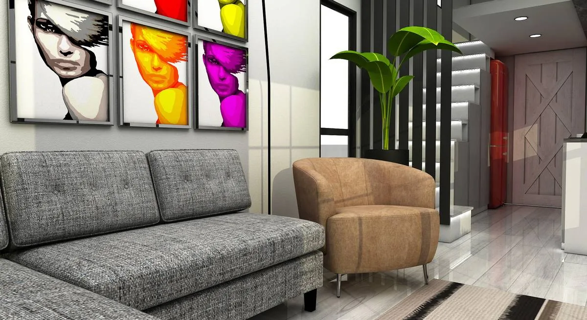
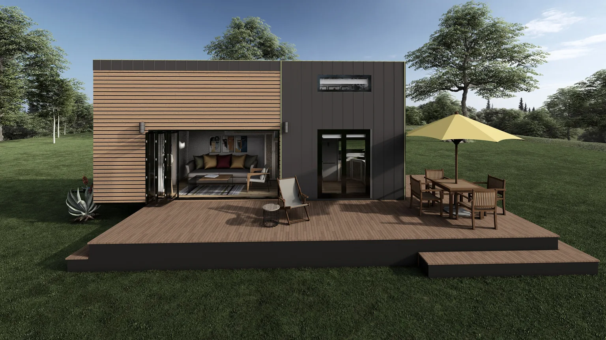
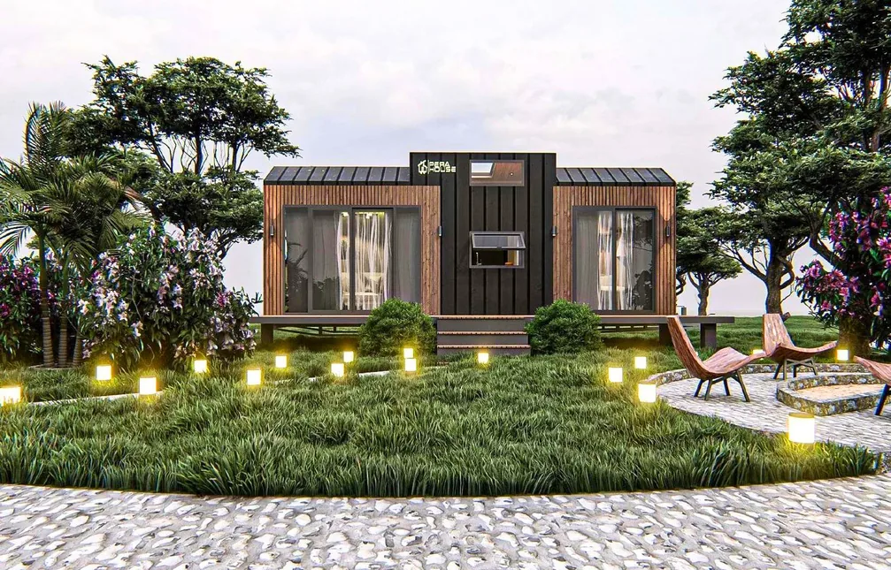

Tiny House in Kirchenpingarten kaufen
Premium Tiny Houses direkt vom Hersteller: intelligent geplant, für vier Jahreszeiten konfigurierbar und projektbezogen nach Kirchenpingarten lieferbar.
MODUNERA produziert acht Tiny-House-Modelle in eigener Fertigung und plant Lieferungen nach Kirchenpingarten sowie in ganz Bayern. Für ein belastbares Angebot werden Nutzung, Modell, Ausstattung, Grundstückszufahrt und lokale Anforderungen gemeinsam geprüft.
Warum ein MODUNERA Tiny House für Kirchenpingarten?
Von den Alpen bis zu den fränkischen Landschaften bietet Bayern sehr unterschiedliche Standortprofile. Schneelast, Zufahrt, Geländeverlauf und saisonale Nutzung sollten deshalb früh zusammen betrachtet werden.
Mehr Nutzwert pro Quadratmeter
Lofts, Einbaumöbel, klare Laufwege und große Sichtachsen machen kompakte Fläche spürbar großzügiger.
Direkt ab Werk
Eigene Produktion reduziert unnötige Zwischenstufen und schafft klare Ansprechpartner für Modell, Ausstattung und Qualitätskontrolle.
Vier Jahreszeiten planbar
Dämmung, Fenster, Lüftung sowie Heiz- und Kühlsystem werden auf Nutzung und Standortprofil abgestimmt.
Weniger Betriebsfläche
Eine kleinere, gut geplante Hülle kann Material-, Reinigungs- und Energieaufwand gegenüber deutlich größeren Wohnflächen reduzieren.

Standortgerechter Komfort statt Standardpaket.
Wintertemperaturen, mögliche Schneelasten und stärkere Tag-Nacht-Unterschiede machen eine abgestimmte Dämm-, Heiz- und Verschattungslösung besonders wichtig.
- standortbezogene Prüfung von Schnee- und Windbeanspruchung
- durchgängiger Wärmeschutz und minimierte Wärmebrücken
- bedarfsgerechte Heizung mit effizienter Regelung
- sommerlicher Wärmeschutz für große Glasflächen
Die Angaben sind eine geografisch abgeleitete Orientierung. Statik, Energie, Genehmigung und Aufstellung müssen für das konkrete Grundstück fachlich geprüft werden.
MD 2: Familien, Gäste und getrennte Schlafbereiche
Für viele Projekte rund um Kirchenpingarten ist MD 2 ein guter Ausgangspunkt. Die endgültige Modellwahl erfolgt nach Personenanzahl, gewünschter Privatsphäre, Nutzung und Transportbedingungen.

MD 2 individuell konfigurieren
Familien, Gäste und getrennte Schlafbereiche. Farben, Fassaden, Küche, Bad, Möbel, Heiztechnik und Energieoptionen können projektbezogen angepasst werden.
Modell ansehen →Nutzungsideen für Kirchenpingarten
Ein Tiny House kann Zuhause, Ferienobjekt, Arbeitsraum oder Teil eines Betreiberprojekts sein. Wirtschaftlichkeit und Komfort hängen von einer klaren Zieldefinition ab.
Grundriss, Technik und Ausstattung werden auf dieses Nutzungsszenario abgestimmt.
Grundriss, Technik und Ausstattung werden auf dieses Nutzungsszenario abgestimmt.
Grundriss, Technik und Ausstattung werden auf dieses Nutzungsszenario abgestimmt.
Grundriss, Technik und Ausstattung werden auf dieses Nutzungsszenario abgestimmt.

MODUNERA Produktionsbasis
- feuerverzinkte Stahlkonstruktion und Stahlfahrgestell
- Thermowood-, Verbund- und projektabhängige Metallfassaden
- wärmeisolierte PVC-Elemente und doppelt gehärtetes Thermopane
- flammhemmende Kabelkanäle und halogenfreie 220-Volt-Installation
- Klimaanlagen-Infrastruktur und konfigurierbare Heizlösungen
- lackierte Küchenschränke und massive Paneel-Arbeitsflächen
Kompakter leben, gezielter investieren.
Nachhaltigkeit entsteht nicht durch ein Etikett, sondern durch passende Größe, langlebige Konstruktion, effizienten Betrieb und bewusste Materialwahl.
Kleinere beheizte und zu reinigende Flächen können laufenden Aufwand reduzieren.
Heizung, Kühlung, Solar und Speicher werden nach realem Nutzungsprofil dimensioniert.
Wartbare Fassaden, robuste Stahlstruktur und dokumentierte Details unterstützen den Werterhalt.
Ein durchdachter Grundriss kann Wohnen, Arbeiten, Gäste und Vermietung kombinieren.
Von Kirchenpingarten zur fertigen Konfiguration.
Ein sauberer Prozess reduziert Nachträge, Transportprobleme und Fehlentscheidungen.
Anforderungen
Nutzung, Personen, Budget, Grundstück und gewünschter Termin.
Konfiguration
Modell, Grundriss, Fassade, Innenausbau und technische Pakete.
Standortprüfung
Zufahrt, Entladung, Untergrund, Anschlüsse und lokale Freigaben.
Produktion & Lieferung
Qualitätskontrolle, Dokumentation und abgestimmter Transport nach Kirchenpingarten.
FAQ: Tiny House in Kirchenpingarten
Klare Antworten für die erste Projektphase. Verbindliche Aussagen entstehen nach Standort- und Vertragsprüfung.
Der Preis hängt von Modell, Länge, Innenausbau, Heiz- und Kühlsystem, Energiepaket, Transport sowie den örtlichen Anschlussarbeiten in Kirchenpingarten ab. Der Konfigurator liefert eine erste unverbindliche Indikation; ein verbindliches Angebot folgt nach technischer Prüfung.
Eine Lieferung nach Kirchenpingarten wird projektbezogen geprüft. Entscheidend sind Abmessungen, Gewicht, Route, Zufahrt, Rangierfläche und Entladepunkt. Die finale Transportplanung erfolgt nach Standortfreigabe.
Mobilität oder Räder bedeuten nicht automatisch Genehmigungsfreiheit. Nutzung, Aufstellungsdauer, Grundstück und lokale Planungsvorgaben müssen mit der zuständigen Gemeinde oder Bauaufsicht für Kirchenpingarten geklärt werden.
Die MODUNERA-Modelle können für eine ganzjährige Nutzung konfiguriert werden. Dämmung, Fenster, Wärmebrücken, Lüftung und Heizleistung müssen jedoch auf das konkrete Klima und Grundstück in Kirchenpingarten abgestimmt werden.
Für Paare und Panoramaorientierung eignet sich häufig MD 1; Familien profitieren von MD 2 mit zwei Lofts; MD 3 und MD 4 bieten zusätzliche Raumtrennung; MD 6 setzt einen starken Chalet-Akzent. Die endgültige Auswahl richtet sich nach Personenanzahl, Nutzung und Standort.
Ja. Fassade, Innenraum, Küche, Bad, Möbel, Heiz- und Kühlsystem, Solartechnik sowie weitere Optionen können innerhalb der technischen und gewichtsspezifischen Grenzen projektbezogen konfiguriert werden.
Weitere Tiny-House-Standorte
Entdecken Sie regionale Informationsseiten und vergleichen Sie standortbezogene Planungsprofile.
* Luftlinienentfernung zur Produktionsregion Kartepe/Türkei, auf 50 km gerundet. Keine Routen-, Lieferzeit- oder Kostenangabe.